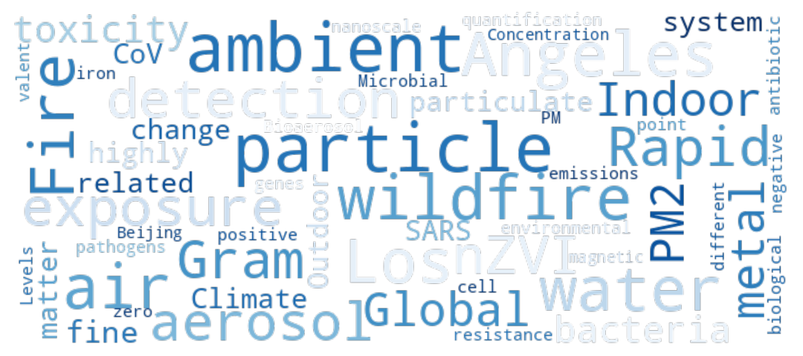
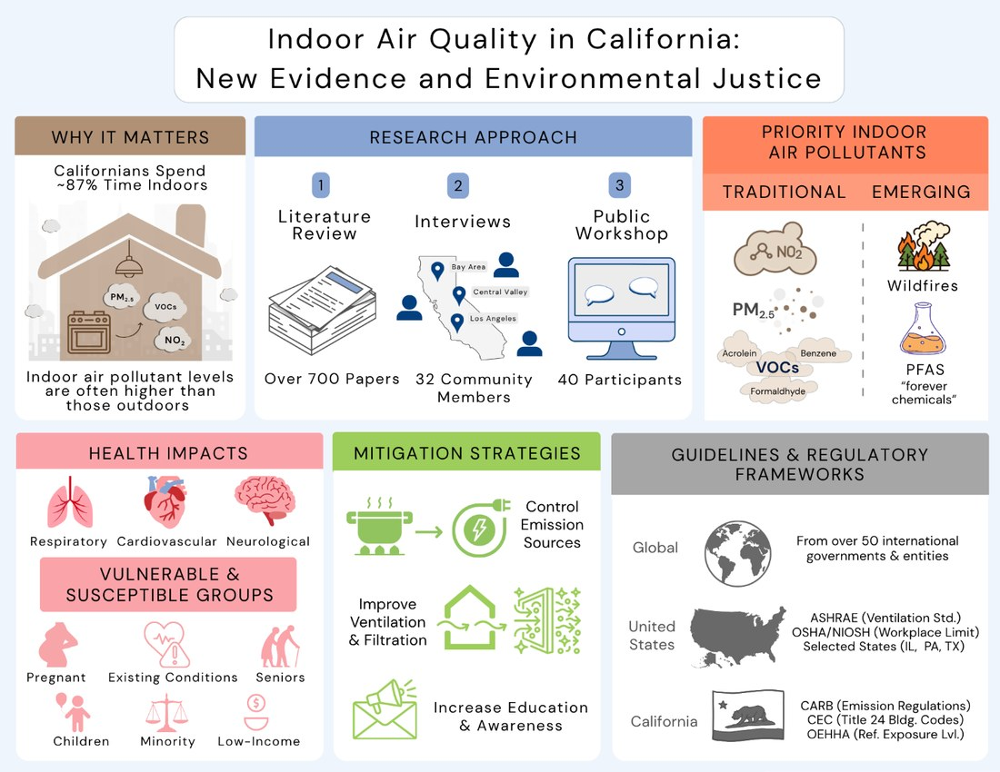
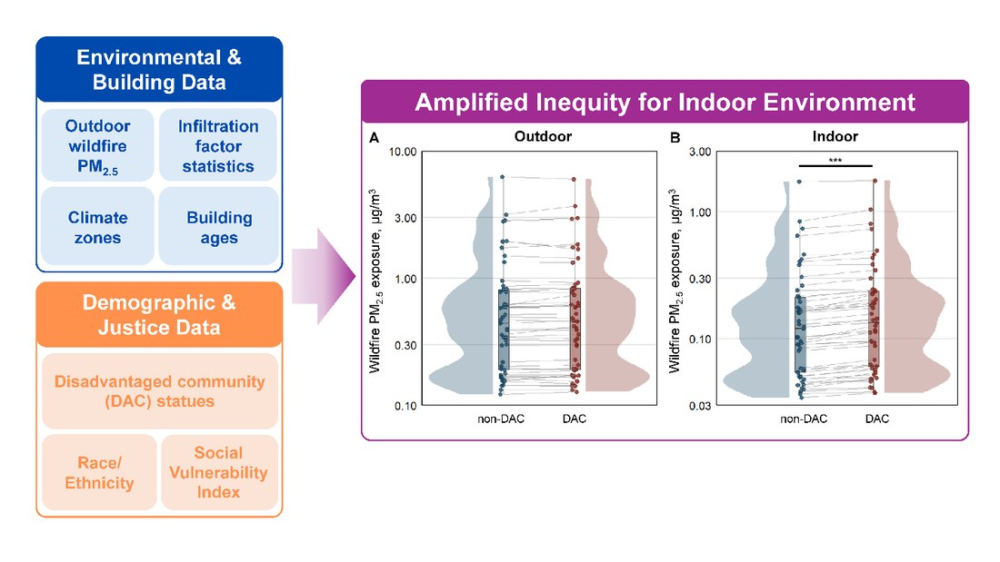
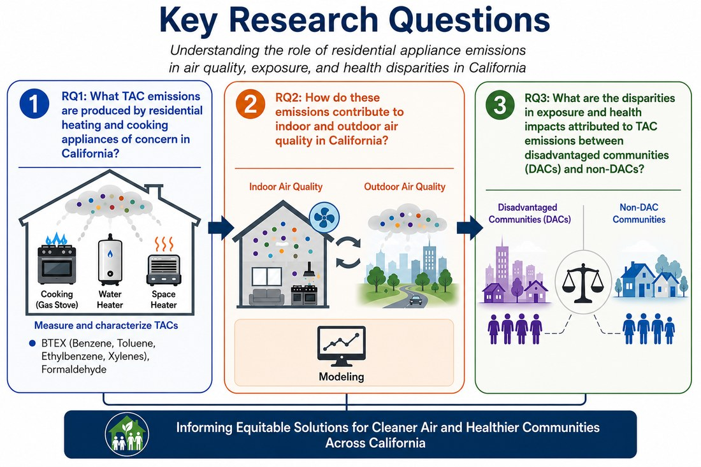
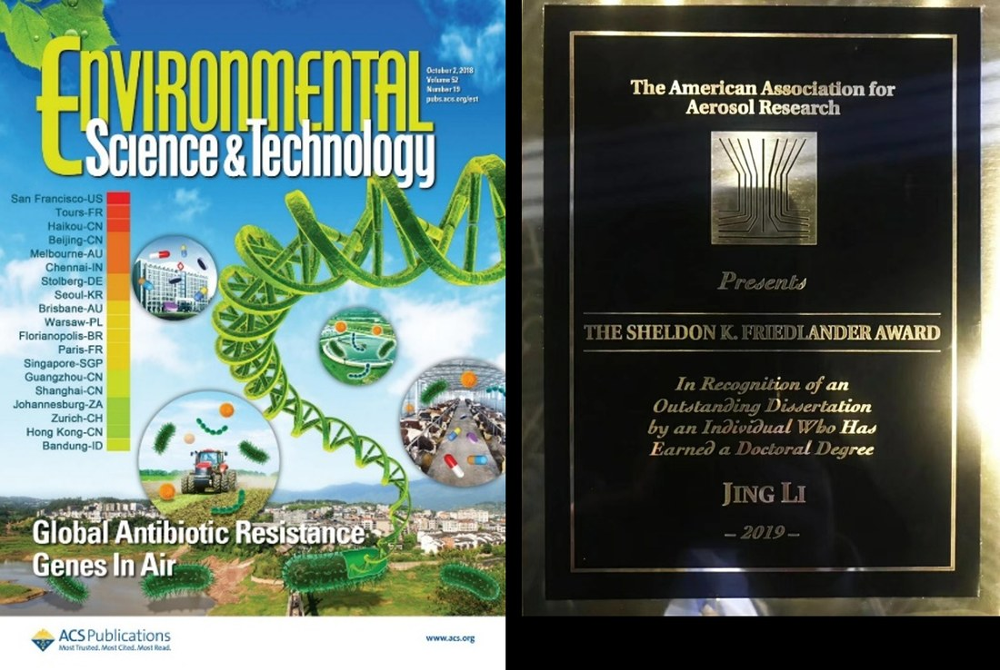
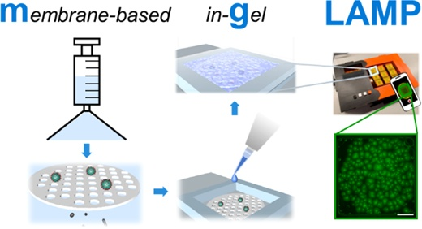

Jing Li
Associate Project Scientist
Dept. of Environmental Health Sciences
UCLA
Hello! I am Jing Li. I am currently an Associate Project Scientist in the Department of Environmental Health Sciences at UCLA. Previously, I worked as a postdoctoral researcher in the Department of Environmental Science and Engineering at Caltech. I earned my Ph.D. in Environmental Science from Peking University.
My research lies at the intersection of climate change, air pollution, and environmental justice. I investigate how climate change amplifies air pollution exposures and disparities, with a particular focus on indoor air pollution in vulnerable and overburdened communities.
I currently lead a California Air Resources Board (CARB)-funded RESPECT study as Principal Investigator that profiles toxic air contaminant emissions from residential appliances and evaluates exposure and health disparities across diverse communities in California.
My earlier work also included characterizing particulate matter toxicity and microbial fractions worldwide and developing field-deployable microbial detection methods for pandemic response in low-resource settings.

Indoor air pollution is an important but understudied contributor to population health, particularly for communities that experience disproportionate environmental burdens. I've played a leading role in a CARB-funded project to update California's 2005 indoor air quality report for the California Legislature, systematically reviewing more than 700 peer-reviewed studies to synthesize evidence on indoor air pollutants, sources, health effects, environmental justice disparities, regulations, and mitigation strategies. The project also incorporated community perspectives through interviews with 32 residents from overburdened communities.

Part of my work also focuses on wildfire smoke and demonstrates that indoor exposure can reveal substantial, and sometimes greater, disparities than outdoor metrics alone. In a national analysis of 72,537 U.S. census tracts, I found that disadvantaged communities experienced significantly higher estimated indoor wildfire PM₂.₅ exposures, highlighting how indoor infiltration can amplify exposure disparities that may not be captured by outdoor measurements alone.

I currently serve as Principal Investigator of the CARB-funded RESPECT study (Residential Appliances in Diverse California Communities: Emission, Exposure, and Health Impacts of Toxic Air Contaminants). The project characterizes volatile organic compound (VOC) emissions from residential stoves, space heaters, and water heaters in 65 homes across diverse California communities—approximately half in disadvantaged communities. By integrating emissions measurements, exposure assessment, risk assessment, and modeling, we aim to understand how residential combustion contributes to indoor air pollution and whether exposures are distributed inequitably. The resulting data will help inform California’s transition toward zero-emission residential appliances while providing evidence on how climate and energy policies may affect environmental health across different communities.

During my Ph.D. at Peking University, I investigated spatial and temporal variations in particulate matter toxicity and microbial content. I developed a vehicle air-conditioning filter-based approach to collect particulate matter across 19 cities worldwide, enabling large-scale comparisons of aerosol toxicity, and conducted a global survey of airborne antibiotic resistance genes published in Environmental Science & Technology—selected as the journal cover, an ACS Editors’ Choice, and one of ES&T’s 11 Best Papers of 2018. I received the Sheldon K. Friedlander Award from the American Association for Aerosol Research for my doctoral dissertation.

At Caltech, I led the development of the mgLAMP platform, a patented technology for rapid SARS-CoV-2 quantification in wastewater (US Patent No. US20220162686A1). Designed to enable point-of-sampling analysis without centralized laboratory infrastructure, it was recognized by the Water Environment Federation’s Rapid Wastewater SARS-CoV-2 Testing Challenge and subsequently licensed.

Under Review / Revision
, Q. Nie, Y. Yao, H. Chen, P. Boo, Q. Yu, M. Niu, Y. Zhu*. Metal Concentrations in Surface Dust Following the 2025 Los Angeles Fires. In Revision
Y. Yao, Q. Nie, , M. Niu, Y. Fan, Q. Yu, D. Garcia-Gonzales, H. Chen, F. Gao, M. Jerrett, Y. Zhu*. Toxic metals enriched in fine particulate matter during the 2025 Los Angeles wildfires. In Revision
C. Barnes*, ..., Y. Zhu, , T. Benmarhnia, et al. Climate change increased the likelihood of wildfire disaster in highly exposed Los Angeles area. Submitted
First / Co-First / Corresponding Author
, X. Liu, Q. Yu, Y. Zhu* (2026). From Outdoor to Indoor: Amplified Inequities in Wildfire PM₂.₅ Exposure Across the Contiguous United States. Environmental Science & Technology, 60(26): 18733–18744.
, M. Bot, X. Liu, Y. Yao, R.A. Ophoff, Y. Zhu* (2026). Detection of SARS-CoV-2 RNA on Air Purifier Filters in University Spaces Without Symptomatic or Confirmed Cases. Aerosol Science and Technology, 60(5): 440–449.
, Y. Zhu* (2025). The cost of clean air: Global disparities in reducing indoor wildfire-related PM₂.₅ exposure. Science Advances, 11: eady0890.
Y. Zhu, X. Wu, A. Gu, L. Dobelle, C.A. Cid, , M.R. Hoffmann* (2022). Membrane-based in-gel loop-mediated isothermal amplification (mgLAMP) system for SARS-CoV-2 quantification in environmental waters. Environmental Science & Technology, 56(2): 862–873.
, Y. Zhu, X. Wu, M.R. Hoffmann* (2020). Rapid detection methods for bacterial pathogens in ambient waters at the point of sample collection: A brief review. Clinical Infectious Diseases, 71(S2): S84–S90.
, H. Chen, X. Li, M. Wang, X. Zhang, J. Cao*, F. Shen, Y. Wu, S. Xu, H. Fan, G. Da, R. Huang, J. Wang, C.K. Chan, A.L. de Jesus, L. Morawska, M. Yao* (2019). Differing toxicity of ambient particulate matter (PM) in global cities. Atmospheric Environment, 212: 305–315.
, J. Cao, Y. Zhu, Q. Chen, F. Shen, Y. Wu, S. Xu, H. Fan, G. Da, R. Huang, J. Wang, A.L. de Jesus, L. Morawska, C.K. Chan, J. Peccia, M. Yao* (2018). Global survey of antibiotic resistance genes in air. Environmental Science & Technology, 52(19): 10975–10984.ES&T CoverACS Editors’ Choice
, L. Zhou, X. Zhang, C. Xu, L. Dong*, M. Yao* (2016). Bioaerosol emissions and detection of airborne antibiotic resistance genes from a wastewater treatment plant. Atmospheric Environment, 124: 404–412.
K. Wei#, Y. Zheng#, , F. Shen, Z. Zou, H. Fan, X. Li, C.-Y. Wu, M. Yao* (2015). Microbial aerosol characteristics in highly polluted and near pristine environments. Science Bulletin, 60(16): 1439–1447.
, Q. Chen, X. Li, M. Yao* (2014). Rapid point-of-use water purification using nanoscale zero valent iron (nZVI) particles. Chinese Science Bulletin, 59(29/30): 3926–3934.
, M. Li#, F. Shen, Z. Zou, M. Yao*, C.-Y. Wu (2013). Characterization of biological aerosol exposure risks from automobile air conditioning system. Environmental Science & Technology, 47(18): 10660–10666.
Q. Chen#, , Y. Wu, F. Shen, M. Yao* (2013). Biological responses of Gram-positive and Gram-negative bacteria to nZVI (Fe⁰), Fe²⁺ and Fe³⁺. RSC Advances, 3: 13835–13842.
Co-Author
H. Chen, Q. Nie, Q. Yu, , M. Niu, Y. Yao, P. Boo, ..., Y. Zhu* (2026). Characterizing Post-Fire Fine and Ultrafine Particles in the 2025 Eaton Fire Burn Zone and Nearby Areas. Environmental Science & Technology Letters, 13(5): 728–736.
N. Ho, S. Dhayade, Y. Zhang, Y. Zhang, , Y. Li, Y. Shen, Y. Zhu, F. Gao* (2026). Beyond spatiotemporal modeling: a review of machine learning for traffic-related air pollution. npj Clean Air, 2(1): 33.
Y. Yao, D. Garcia-Gonzales, , M. Niu, Q. Nie, M. Jerrett, Y. Zhu* (2026). Indoor and Outdoor Volatile Organic Compound Levels during and after the 2025 Los Angeles Wildfires. Environmental Science & Technology Letters, 13(1): 70–75.
M. Qiu*, D. Chen, M. Kelp, , G. Huang, M. Danesh Yazdi (2025). The rising threats of wildland-urban interface fires in the era of climate change: The Los Angeles 2025 fires. The Innovation, 6(5): 100835.
F. Shen*, M. Niu, H. Chen, T. Zhang, , H. Tong, Y. Wu (2024). Nonlinear proinflammatory effect of short-term PM₂.₅ exposure: A potential role of lipopolysaccharide. Journal of Environmental Sciences, 136: 292–300.
T. Ma, H. Chen, Y.-P. Liao, J. Li, X. Wang, L. Li, , Y. Zhu*, T. Xia* (2023). Differential toxicity of electronic cigarette aerosols from different generations of devices. Environment & Health, 1(5): 315–323.
A.Y. Gu, Y. Zhu, , M.R. Hoffmann* (2021). Speech-generated aerosol settling times and viral viability can improve COVID-19 transmission prediction. Environmental Science: Atmospheres, 2: 34–45.
H. Tong*, F. Liu, A. Filippi, ..., , H. Chen, ..., U. Pöschl (2021). Aqueous-phase reactive species formed by fine particulate matter from remote forests and polluted urban air. Atmospheric Chemistry and Physics, 21: 10439–10455.
Y. Zhu, , X. Lin, X. Huang, M.R. Hoffmann* (2021). A hydrogel beads based platform for single-cell phenotypic analysis and digital molecular detection. ACS Applied Bio Materials, 4(3): 2664–2674.
S. Wang, Y. Zhu, Y. Yang, , M.R. Hoffmann* (2020). Electrochemical cell lysis of gram-positive and gram-negative bacteria: DNA extraction from environmental water samples. Electrochimica Acta, 338: 135864.
X. Wu, X. Huang, Y. Zhu, , M.R. Hoffmann* (2020). Synthesis and Application of Superabsorbent Polymer Microspheres for Rapid Concentration and Quantification of Microbial Pathogens in Ambient Water. Separation and Purification Technology, 239: 116540.
H. Chen, X. Zhang, T. Zhang, X. Li, , Y. Yue, M. Wang, Y. Zheng, H. Fan, J. Wang, M. Yao* (2020). Ambient PM Toxicity Is Correlated with Expression Levels of Specific MicroRNAs. Environmental Science & Technology, 54(16): 10227–10236.
H. Chen, , X. Zhang, X. Li, M. Yao*, G. Zheng* (2018). Automated in vivo nano-sensing of breath-borne protein biomarkers. Nano Letters, 18: 4716–4726.
Y. Yue, H. Chen, A. Setyan, M. Elser, M. Dietrich, , T. Zhang, X. Zhang, Y. Zheng, J. Wang*, M. Yao* (2018). Size-resolved endotoxin and oxidizing potential of ambient particles in Beijing and Switzerland. Environmental Science & Technology, 52(12): 6816–6824.
K. Wei, Z. Zou, Y. Zheng, , F. Shen, C. Wu, Y. Wu, M. Hu, M. Yao* (2016). Ambient bioaerosol particle dynamics observed during haze and sunny days in Beijing. Science of the Total Environment, 550: 751–759.
P. Huang, Z. Ye, W. Xie, Q. Chen, , Z. Xu, M. Yao* (2013). Rapid magnetic removal of aqueous heavy metals using nanoscale zero valent iron (nZVI) particles. Water Research, 47(12): 4050–4058.
Q. Chen, M. Gao, , F. Shen, Y. Wu, Z. Xu, M. Yao* (2012). Inactivation and magnetic separation of bacteria from liquid suspensions using electrosprayed and nonelectrosprayed nZVI particles. Environmental Science & Technology, 46(4): 2360–2367.
Patent
M.R. Hoffmann, , Y. Zhu, X. Wu, A. Gu, L. Dobelle, C.A. Cid (2021). Membrane-Based in-Gel Loop-Mediated Isothermal Amplification (mgLAMP) System. US Patent No. US20220162686A1 · International Patent No. WO2022115187A1.